Klimatyzacja
Dwustrefowa klimatyzacja w każdym pojeździe — przyjemna temperatura niezależnie od pory roku i pogody na zewnątrz.

Aktualnie flota Okay Taxi liczy 111 nowoczesnych pojazdów w charakterystycznych biało-czerwonych barwach. Toyota, Hyundai, Škoda, Mercedes, Peugeot, Opel, Renault i Chevrolet — każdy pojazd pod stałym monitoringiem GPS.

Flota Okay Taxi składa się z 111 nowoczesnych, regularnie serwisowanych pojazdów. Każda taksówka spełnia najwyższe standardy czystości i bezpieczeństwa. Wszystkie auta są klimatyzowane, wyposażone w terminale płatnicze, ładowarki USB-A i USB-C oraz wideorejestatory.
W naszej flocie znajdziesz pojazdy osobowe klasy standard i comfort, auta 7-osobowe (busy), pojazdy VIP (Mercedes V-Class) oraz pojazdy przystosowane do przewozu osób z niepełnosprawnościami. Na życzenie zapewniamy bezpłatnie foteliki dla dzieci.
Jednolity standard wyposażenia niezależnie od marki i klasy pojazdu — każdy pasażer dostaje ten sam komfort.
Dwustrefowa klimatyzacja w każdym pojeździe — przyjemna temperatura niezależnie od pory roku i pogody na zewnątrz.
USB-A i USB-C w tylnej kanapie. Doładuj telefon, tablet lub inne urządzenie podczas jazdy — za darmo.
Karta Visa, Mastercard, BLIK, płatności zbliżeniowe — terminal w każdej taksówce. Płać jak Ci wygodnie.
Na życzenie bezpłatnie fotelik dla dziecka. Wystarczy zgłosić przy zamawianiu pod numerem 720 535 353.
Marki we flocie: Toyota, Hyundai, Renault, Škoda, Peugeot, Opel, Mercedes, Chevrolet. Każda taksówka w rozpoznawalnych biało-czerwonych barwach.
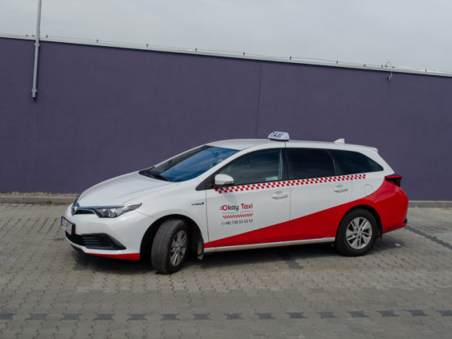
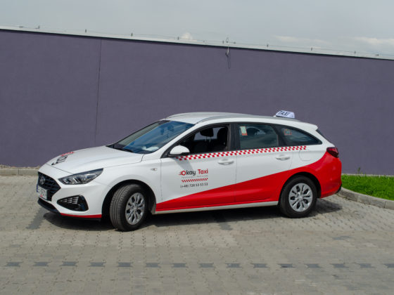
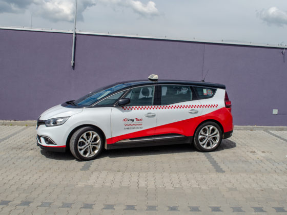
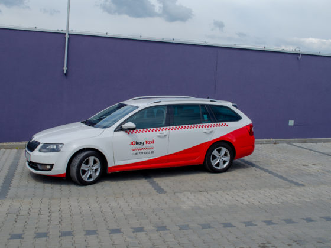
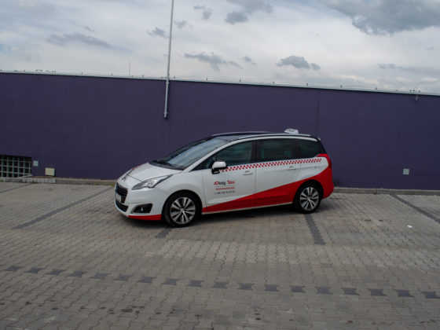
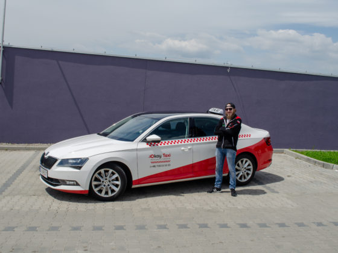
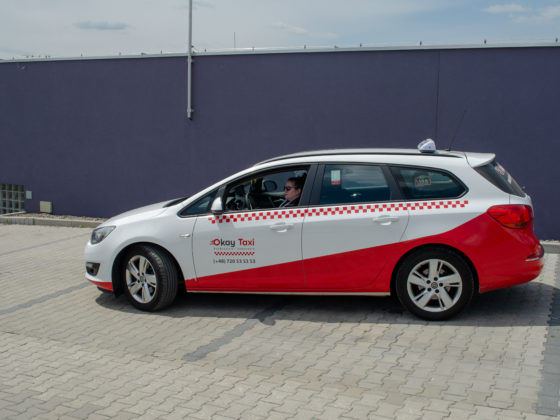
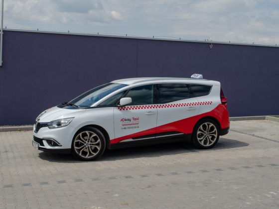
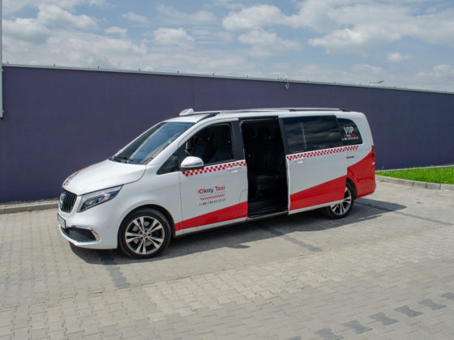
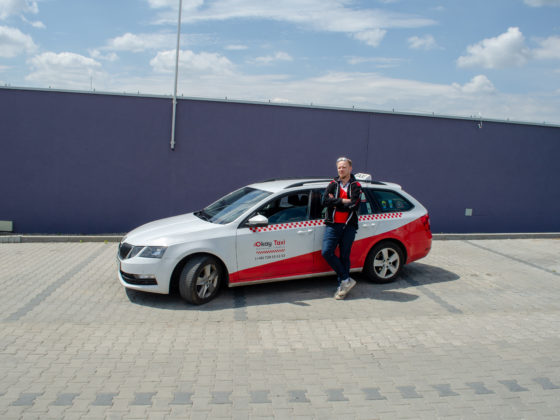
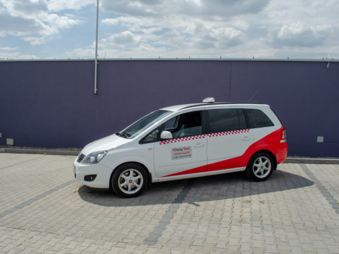
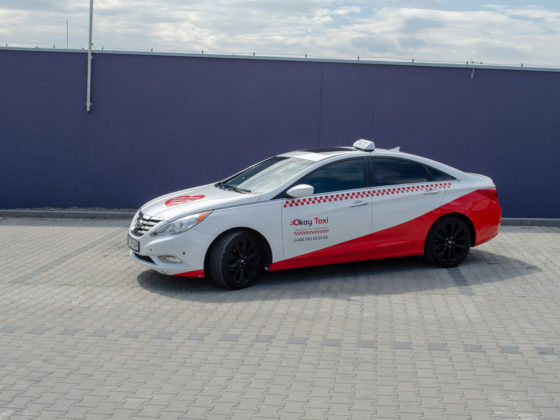
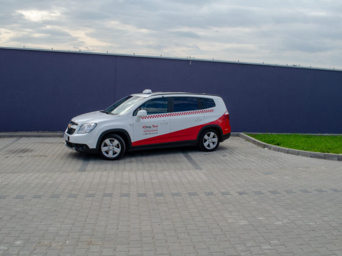
Każdy pojazd Okay Taxi jest regularnie przeglądany i serwisowany. Stosujemy wideorejestratory VIOFO — nagrywanie trasy zapewnia bezpieczeństwo zarówno pasażerom, jak i kierowcom.
Flota Okay Taxi liczy obecnie 111 pojazdów w charakterystycznych biało-czerwonych barwach. Wszystkie auta są pod stałym monitoringiem GPS i regularnie serwisowane.
Flota Okay Taxi obejmuje następujące marki: Toyota, Hyundai, Renault, Škoda, Peugeot, Opel, Mercedes-Benz i Chevrolet. Najliczniej reprezentowane są modele Škoda (Octavia, Superb) oraz Hyundai. Dla przewozów VIP dysponujemy Mercedes-Benz.
Tak, wszystkie 111 pojazdów Okay Taxi jest wyposażone w dwustrefową klimatyzację. Dodatkowo w każdej taksówce znajdują się ładowarki USB-A i USB-C, terminal płatniczy (karta, BLIK), wideorejestator VIOFO oraz foteliki dziecięce na życzenie.
Tak, dysponujemy pojazdami 7-osobowymi (busami) dla większych grup oraz pojazdami klasy VIP (Mercedes V-Class) dla przewozów premium. Aby zamówić większy pojazd, zadzwoń pod numer 720 535 353 i poinformuj dyspozytora.
Tak, foteliki dziecięce są dostępne w naszej flocie bezpłatnie. Wystarczy zgłosić potrzebę fotelika przy zamawianiu taksówki telefonicznie (720 535 353) lub przez aplikację mobilną.
Tak, każdy pojazd Okay Taxi posiada pełne ubezpieczenie OC (odpowiedzialności cywilnej), AC (autocasco) oraz NNW (następstw nieszczęśliwych wypadków). Pasażerowie są w pełni ubezpieczeni podczas przejazdu.
Tak, cała flota Okay Taxi znajduje się pod stałym monitoringiem GPS w czasie rzeczywistym. Dyspozytorzy widzą lokalizację każdego pojazdu, co pozwala na szybki dojazd do pasażera (średni czas dojazdu w Bielsku-Białej: poniżej 8 minut).
Pojazdy Okay Taxi przechodzą regularne przeglądy techniczne co 10 000 km. Dodatkowo każdy samochód jest sprawdzany codziennie przed wyjazdem na trasę — czystość, poziom płynów, sprawność techniczna.
Okay Taxi dysponuje flotą 111 nowoczesnych pojazdów w charakterystycznych biało-czerwonych barwach. Każdy samochód jest regularnie serwisowany, wyposażony w klimatyzację, terminal płatniczy (karta Visa, Mastercard, BLIK), ładowarki USB-A i USB-C oraz wideorejestator VIOFO.
We flocie znajdują się pojazdy marek: Toyota, Hyundai, Renault, Škoda, Peugeot, Opel, Mercedes-Benz i Chevrolet. Najliczniej reprezentowane są modele Škoda (Octavia, Superb) oraz Hyundai. Dla przewozów VIP dysponujemy samochodami Mercedes-Benz, w tym pojazdami 7-osobowymi (V-Class) dla większych grup.
Cała flota znajduje się pod stałym monitoringiem GPS w czasie rzeczywistym. Dzięki temu dyspozytorzy mogą szybko kierować pojazdy do pasażerów — średni czas dojazdu w Bielsku-Białej wynosi poniżej 8 minut.
Każdy pojazd posiada pełne ubezpieczenie OC, AC i NNW. Przeglądy techniczne co 10 000 km oraz codzienne sprawdzenie stanu technicznego przed wyjazdem na trasę. Foteliki dziecięce dostępne bezpłatnie na życzenie — wystarczy zgłosić przy zamówieniu pod numerem 720 535 353.